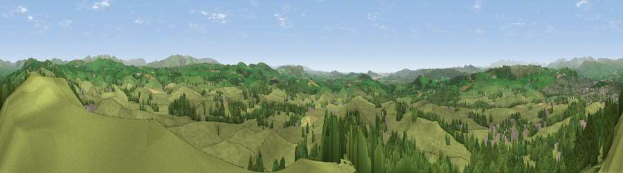

The Helm
#6529 in England · top 27% of its area beats it · near OxenholmeThe view, rendered

A 360° render of this exact spot computed from the terrain model, tree cover and land cover — summer colours, afternoon light, calibrated against photographs of famous viewpoints. Real trees, hedges and buildings will differ in detail.
The panorama
Grey silhouette: terrain skyline in each direction (720 bearings, Earth curvature and refraction included). Dashed green: skyline with trees (+15 m) and buildings (+8 m) as obstacles. Blue strip: how far the ground is visible on each bearing.
Where the view opens
Wedge length = distance to the farthest visible ground on that bearing (vegetation-aware). Rings at 10, 25 and 50 km.
What fills the view
73% grassland · 22% woodland · 4% built-up ·
Angular shares of the visible panorama (visual magnitude), not map area. Landscape diversity 0.32 (0–1 Shannon).
Key numbers
More beautiful places nearby
The staircase of upgrades: each row has a higher view potential than everything closer. Driving times are estimates from straight-line distance, calibrated against real road routing — check an actual route before setting out.
| Place | Direction | Drive | Score |
|---|---|---|---|
| Viewpoint near Brigsteer | WNW · 5 km | ~12 min | 72.6 |
| Viewpoint near Old Hutton | ENE · 6 km | ~12 min | 72.7 |
| Viewpoint near Meal Bank | NNE · 6 km | ~12 min | 75.7 |
| Scout Hill | SSE · 7 km | ~15 min | 76.5 |
| Viewpoint near Lupton | S · 8 km | ~17 min | 78.7 |
| Viewpoint near High Newton | WSW · 14 km | ~25 min | 79.2 |
| Calf Top | ESE · 14 km | ~25 min | 79.8 |
| Viewpoint near Arnside | SW · 14 km | ~25 min | 80.7 |
54.29243, -2.72261 · source: osm viewpoint · position refined by local search. Computed location — check access rights before visiting.